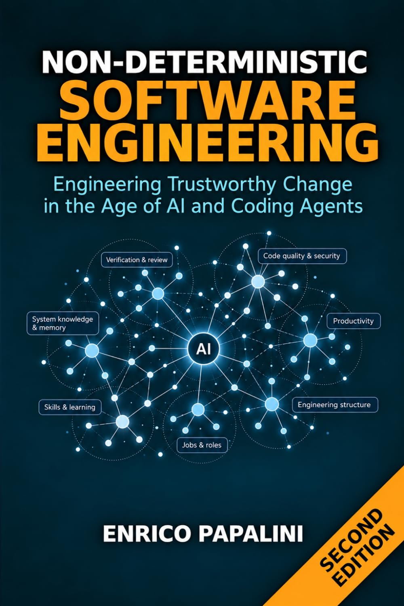

Current NDSE2 edition
Non-Deterministic Software Engineering, Second Edition
Engineering Trustworthy Change in the Age of AI and Coding Agents
13 chapter or file records · NDSE2 edition
Browse by group
6 published books: 5 earlier volumes and the current second edition of Non-Deterministic Software Engineering.

Non-Deterministic · Book series
Explore the books behind the Atlas: software engineering, spec-driven development, autonomous coding agents and loop engineering. Follow each volume into its chapter and source catalogue.
The Atlas distinguishes 5 earlier volumes from the published second edition of Non-Deterministic Software Engineering (NDSE2).

Engineering Trustworthy Change in the Age of AI and Coding Agents
13 chapter or file records · NDSE2 edition
Each book has its own Amazon.com destination and a catalogue of the chapter or file records preserved in the Atlas.
How to Build Reliable Software with AI Assistants Without Losing Quality, Security, or Control
35 chapter or file records · Earlier volume
From Principles to Practice -- A Companion to Non-Deterministic Software Engineering
11 chapter or file records · Earlier volume
Enterprise Edition -- From Public Frameworks to Enterprise Practice
36 chapter or file records · Earlier volume
Building Self-Improving Systems That Ship While You Sleep
19 chapter or file records · Earlier volume
Design Reliable Agentic AI Systems Beyond the Prompt
10 chapter or file records · Earlier volume